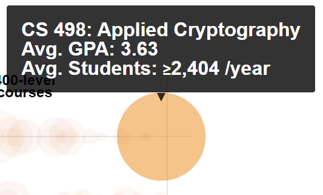
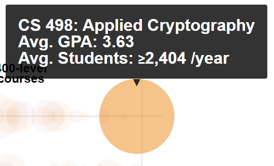
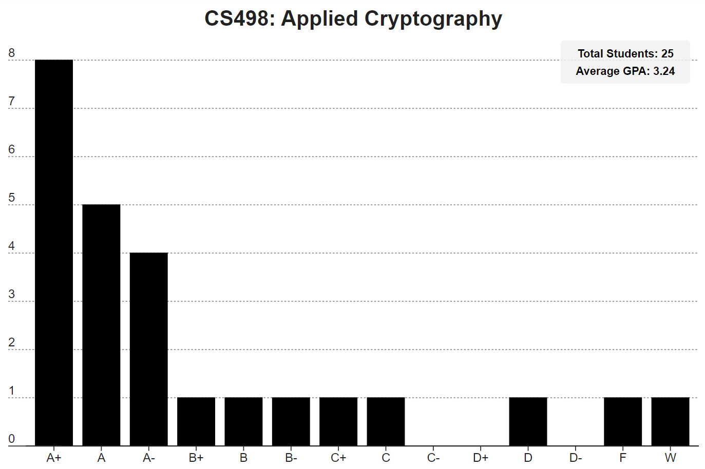

Over the last two years I've completed six classes at the University of Illinois Urbana-Champaign (pronounced like "ban" in the middle), clawing my way towards a Master's in computer science. Finishing this project will wrap up my seventh class, leaving me with one final class to finish. I've had a bad case of what I'll call impostor syndrome or genius envy ever since I started this program. The irrational part of my brain tells me that my struggles with the workload are unique, and that everyone else gets perfect grades with little effort.
One side effect of all this nonsense has been a slight obsession with my GPA and grades in general. At some point during my second year I reasoned that "good data can cut through any amount of noise", so I asked a simple question:
How well do people actually do in all these classes? Or, to put it more like a data scientist, what are the grade distributions for all the classes in the computer science curriculum?
A few Google searches led me to the answer:
GPAs of Every Course at The University of Illinois
In July 2016, the University of Illinois responded to a Freedom of Information Act request (FOIA #16-456 and others) for "the grade distributions by percent and/or letter grade, for every class [...] at the University of Illinois at Urbana-Champaign".
This dataset, now available on github, contains the breakdown of GPA for every course at The University of Illinois. As noted in the FOIA response, some data was withheld to maintain FERPA compliance.
This is a fascinating dataset that contains grade distributions for every class taught at Illinois over the last decade. The visualization, which I'll call the "circle graph", is also impressive. It provides a bird's-eye view of the average number of students enrolled in each class per year, along with the average GPA. Being a computer science student, I immediately moused over the entire range of CS classes. It didn't hurt that our classes are in the first row.
 

When I got to the end of the row and moused over CS498, three things immediately occurred to me:
Applied Cryptography sounds complicated, but the average GPA is pretty high. I should do a little research on it.
I'm pretty sure Applied Cryptography isn't the only class designated CS498 in the computer science curriculum.
There is a zero percent chance that over 2,400 people take that class every year (on average).
This prompted my second big question:
What's going on here? Where are the rest of the CS498 classes?
I'll attempt to answer this question before circling back to the first question about grades.
First, we need to take a look at how the dataset is structured. Every section, of every class, in every semester from the Spring of 2010 to the Winter of 2019/2020 has a record in the dataset represented by a row in a CSV file. Each row has a bunch of columns containing useful fields. Each field is described below:
| Column # | Field Name | Description |
|---|---|---|
| 1 | Year | The year the class was taught. |
| 2 | Term | The semester the class was taught. (Spring, Summer, Fall, or Winter) |
| 3 | YearTerm | An aggregate of the previous two that's easy to filter on. ("2019-sp", for example) |
| 4 | Subject | A short abbreviation of the subject in all caps. ("CS" for Computer Science, for example) |
| 5 | Number | The level of the class. ("498", for example) |
| 6 | Course Title | The full name of the class. "Applied Cryptography", for example. |
| 7 - 20 | "A+" to "W" | Each of these columns has a count of the number of people who received that grade. A+, A, A-, B+, B, B- C+, C, C-, D+, D, D-, F, W |
| 21 | Primary Instructor | The primary instructor of each class. Instructors can have multiple sections in a given semester. |
Before we dig into the data, lets reference the following blurb is from the page hosting the dataset and the circle graph:
The page is the result of the work of one team of students' work on this GPA dataset, using data from Fall 2016 through Winter 2019/20.
Given that range, let's start with a few assumptions. First, in order to generate the CS498 circle on the graph, let's assume that the data has been filtered by the year range (2016-2019), then the subject (CS), and finally the number (498).
Next, we'll assume that if multiple courses in a subject match this filter, their total enrollment would be aggregated in one sum. That sum would then be divided by the number of years in the range (4) to find the average.
Finally, the result would be labeled with whatever class title showed up first. For CS498, if we assume the classes were sorted alphabetically, it's also reasonable to assume that "Applied Cryptography" would be at the top of the list.
Let's test those assumptions and look at some data:
Graph 1 shows the total number of students who took any CS498 class for each year those classes were available.
Here we can see that our original assumption is incorrect. No single year crosses the 2,000 mark for enrollment, much less the average since 2016.
As a sanity check, we can look at the enrollment for all 400 level CS classes in Graph 2. We're now well above the expected average of 2,400, but the exact answer still eludes us and lies somewhere in the middle. I didn't have much time to look at the original author's code, unfortunately, so for this project it will stay a mystery.
What about the assumption that "Applied Cryptography" is first in a list of classes sorted alphabetically? If we filter the data to only include CS498 classes taught from 2016 to 2019, we can sort them by year, then alphabetically, to get our answer:
Wrong again. We're two for two. :)
Finally, just out of curiosity, I wanted to graph the number of students who actually did enroll in Applied Cryptography ever year that its been available. To my surprise, this didn't actually require a graph. Applied Cryptography was only offered in the Fall of 2019. A grand total of 25 people took the class. Instead, lets take a look at the grade distribution for that semester, and circle back to my original question.
Here we get another discrepancy with the original circle chart. The average GPA listed was 3.63, while the actual average GPA for the single semester is closer to 3.24.
I very much appreciate the original author's work, and acknowledge that the quantity of classes labeled 498 in the CS curriculum is puzzling. That count has also increased dramatically over the last decade. When developing a course visualization that includes the entire catalog at UIUC, it's easy to overlook one class. I was also inspired to recreate and expand the original circle graph to help answer my first question:
How well do people actually do in all these classes?
For that, we need a more interactive version of the "circle graph" that includes the ability to see the grade distributions for each class in a chart similar to the one shown for Applied Cryptography, which ended up being the bulk of the work for this project. Smash the button below if you're curious: